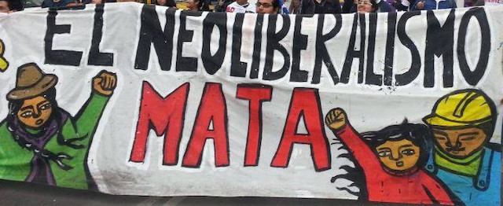

2019-08-12 08:00

Winners Take All: The Elite Charade of Changing the World by Anand Giridharadas is not an academic tome, but that doesn’t prevent him from introducing us to some of the neoliberal swindlers who persistently argue that giving the masses a few crumbs of their billions is doing good in the world. And Giridharadas does it without any need for class analysis or labor theory of value. It’s a quick-paced, enjoyable, and very enlightening book.
In America, where at least 40% of the population believes that immigration has created a zero-sum game in which they are losers of jobs and benefits to immigrants, these same people wholeheartedly embrace the “win-win” logic of neoliberalism, which says that when the super-rich profit, everybody does. Worse, they tell us that only they, these technocratic gatekeepers, are qualified to make change in an increasingly complex, technological world. It’s the Liberal version of Trump telling his base, “only I can save the country.” No matter who’s saying it, it’s profoundly anti-democratic.
Giridharadas points out that the founders of the Gig Economy exploit workers while claiming to be innovative job creators by using their considerable P.R. machines and the razzle-dazzle of their pompous mission statements. It’s not exploitation, these hucksters wink — at least in the sense of stealing from the consumer or the working class — if consumers and workers willingly give up their rights and power and wealth and private information for someone else’s profit.
Giridharadas convincingly explains how and why it is that the so-called “philanthropy” of the super-rich never manages to solve real problems or help real people. Instead, everything becomes a feel-good campaign that looks great on a web page or on a balance sheet. Carbon credits? Pay someone to take responsibility for your pollution. Problem solved — on paper.
We meet people like Vinod Khosla, a billionaire venture capitalist, who speak of schemes like 2020 “entrepreneur” Presidential candidate Andrew Yang’s plan to give $1000 to every family. These people know the super-rich are creating a world in which perhaps 80% of all workers may eventually be redundant and the ramifications scare the hell out of them. The world of their creation represents an “entertainment” problem (“how would we occupy the minds of all those people?”) and a political one (“how would we keep them from revolting?”) Remarkably, Khosla tells us without shame the real purpose of Yang’s plan. “To put it crudely, it’s bribing the population to be well enough off. Otherwise, they’ll work for changing the system, okay?” And, to neoliberals, real change is anathema.
Young, intelligent, well-heeled Americans, just at the moment of launching a career, are deeply torn between the cardboard values their parents, priests and teachers mouthed to them during their childhoods. But now, here they are, suddenly adults and working for McKinsey & Co., selling their souls and swallowing the most egregious cognitive dissonance. Indeed, Capitalism and its evil twin, neoliberalism, are charades, as Giridharadas implies, and people in Latin America know all too well. Sadly, many young people discover the truth for themselves only a few short years into their professional lives — but six figures into debt. Their work is no longer just a charade but a prison.